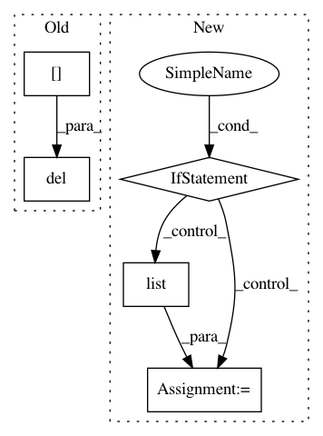

119d1b9063ac43d96622f40e9bffebbefa2a732f,pynets/plotting.py,,plot_all,#Any#Any#Any#Any#Any#Any#Any#Any#Any#Any#Any#Any#,318
Before Change
pruned_nodes.sort(reverse=True)
for j in pruned_nodes:
del label_names[label_names.index(label_names[j])]
del coords[coords.index(coords[j])]
pruned_edges.sort(reverse=True)
for j in pruned_edges:
After Change
pruning = True
dpi_resolution = 500
if pruning is True:
G_pre = nx.from_numpy_matrix(conn_matrix)
[G, pruned_nodes] = most_important(G_pre)
pruned_nodes.sort(reverse=True)
coords_pre = list(coords)
label_names_pre = list(label_names)
if len(pruned_nodes) > 0:
print("Pruning less central nodes for display...")
for j in pruned_nodes:
label_names_pre.pop(j)
coords_pre.pop(j)
conn_matrix = nx.to_numpy_array(G)
label_names = label_names_pre
coords = coords_pre
else:
print("No nodes to prune for plot...")
// Plot connectogram
if len(conn_matrix) > 20:
try:
plotting.plot_connectogram(conn_matrix, conn_model, atlas_select, dir_path, ID, network, label_names)
except RuntimeError:
In pattern: SUPERPATTERN
Frequency: 3
Non-data size: 5
Instances
Project Name: dPys/PyNets
Commit Name: 119d1b9063ac43d96622f40e9bffebbefa2a732f
Time: 2018-06-18
Author: dpisner@utexas.edu
File Name: pynets/plotting.py
Class Name:
Method Name: plot_all
Project Name: cornellius-gp/gpytorch
Commit Name: d71bc3c8b533c319e49cf6b347d13c48c925ea93
Time: 2019-03-18
Author: gpleiss@gmail.com
File Name: gpytorch/utils/getitem.py
Class Name:
Method Name: _compute_getitem_size
Project Name: dPys/PyNets
Commit Name: 46b97a34f22e59347113dae77f9055140f54915e
Time: 2020-04-20
Author: dpisner@utexas.edu
File Name: pynets/dmri/estimation.py
Class Name:
Method Name: streams2graph